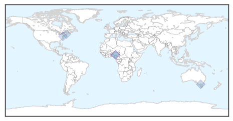
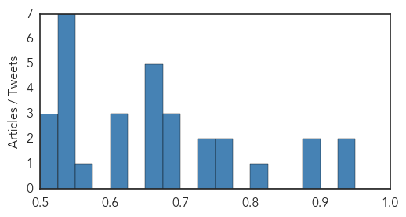
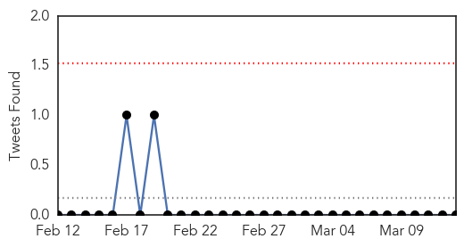

Ebola
30-Day Web Trend
0 alerts, 0 warnings

30-Day Twitter Trend
5 alerts, 2 warnings

Article Locations
Article Confidences
Top Articles:
-
No articles found for Mar 13, 2015
Top Tweets:
- 0.988
- Lack of Ebola Cases Shifts Vaccine Trials Away from Liberia - TIME http://t.co/vQ243YtZzG ebola EVD
- 0.988
- Lack of Ebola Cases Shifts Vaccine Trials Away from Liberia - TIME http://t.co/17zJVI9idR ebola EVD
- 0.977
- Ebola: One military health worker has arrived in Newcastle from Sierra Leone - ChronicleLive http://t.co/abPHrznkYW ebola EVD
- 0.968
- Measles deaths could surpass those from Ebola virus disease in west Africa because of vaccination disruptions. http://t.co/fX2zA9UGln
- 0.947
- Nancy Snyderman, NBC's Ebola-Defying Doctor, Resigns - Daily Beast http://t.co/v760Hin7RH ebola EVD
- 0.947
- Nancy Snyderman, NBC's Ebola-Defying Doctor, Resigns - Daily Beast http://t.co/MIRI0vARJn ebola EVD
- 0.937
- 2014 Ebola Outbreak May Have Laid Tracks for Deadly Measles Epidemic in Africa@ICT_magazine http://t.co/Dko1Xc2kjk
- 0.932
- Could measles knock-on effect be as devastating as Ebola? - Medical News Today http://t.co/9BhVqkYV1Q ebola EVD
- 0.927
- US Ebola Response Fed Fear, Presidential Commission Says - Medscape http://t.co/WG4uQbmDdY ebola EVD
- 0.911
- US healthcare worker with Ebola arrives at NIH for treatment - Reuters http://t.co/CmyZ2ME9Fk ebola EVD
- 0.898
- Ebola, Thief of Rituals, Leaves No Graves to Decorate - New York Times http://t.co/nWsQwvNtOY ebola EVD
- 0.898
- Dr. Nancy Snyderman leaves NBC News after breaking Ebola quarantine - Fortune http://t.co/vXcahCNx9C ebola EVD
- 0.886
- American health worker to be treated for Ebola - Press Herald http://t.co/0LyxM1wrqb ebola EVD
- 0.884
- Socio-Economic Impact of Ebola Virus Disease in West African Countries http://t.co/Jr1JBvig78
- 0.860
- Ebola vaccine trials confronting samemix of skepticism, fear, rumor&understandable mistrust that helped spred Ebola http://t.co/lbbLr5hkFf
- 0.836
- American diagnosed with Ebola to be flown to US from Sierra Leone - The Guardian http://t.co/qfi8ro3t0p ebola EVD
- 0.816
- Factbox: What is Ebola and how is it treated? - SBS http://t.co/Q0dGkAFMRL ebola EVD
- 0.809
- RT: American working for charity Partners in Health contracts Ebola in Sierra Leone, a reminder epidemic is ongoing. http:/…
- 0.795
- Ebola: British patient and four colleagues in UK hospitals - BBC News http://t.co/T9gwZcPHrC ebola EVD
- 0.791
- RT: Measles cases seen almost doubling in Ebola epidemic countries http://t.co/D5sB3S2Dgs via
- 0.786
- Ebola: British patient and five colleagues flown home - BBC News http://t.co/A7ENPMFINc ebola EVD
- 0.778
- Mr. Mambia Goes To Washington: To Honor His Sister, Who Died Of Ebola - NPR (blog) http://t.co/fvbQLfAX3P ebola EVD
- 0.773
- US healthcare worker with Ebola in 'serious' condition: NIH - Reuters http://t.co/Vd0fWve2tN ebola EVD
- 0.773
- US healthcare worker with Ebola in 'serious' condition: NIH - Reuters http://t.co/847CJnufir ebola EVD
- 0.768
- UK says healthcare worker infected with Ebola in Sierra Leone is now in London's Royal Free Hospital. 2 contacts assessed, discharged.
- 0.766
- US healthcare worker with Ebola in 'serious' condition, NIH says - Reuters http://t.co/sog7wKJgjF ebola EVD
- 0.766
- US healthcare worker with Ebola in 'serious' condition, NIH says - Reuters http://t.co/lK33kjwscO ebola EVD
- 0.763
- American who contracted Ebola in Africa to be treated in US - The State http://t.co/7VYmzv4yFJ ebola EVD
- 0.749
- Exclusive: take a first look at the next generation ebola-protection suit - Quartz http://t.co/kejWHkws9j ebola EVD
- 0.744
- Ebola: Infected American Health Worker Arrives in US for Treatment - http://t.co/FMQyohd10H http://t.co/1SHskEH0PO ebola EVD
- 0.742
- RT: Study: Gaps in immunization due to Ebola outbreak may mean an additional 100,000 kids are vulnerable to measles. http:…
- 0.736
- From crisis to sustainable development: lessons from the Ebola outbreak http://t.co/7SrEHkDfmK
- 0.720
- AFD Blog `NIH Statement On Arrival Of American HCW With Ebola Virus For Treatment' http://t.co/JHO0U9xTGP
- 0.682
- Study: Gaps in immunization due to Ebola outbreak may mean an additional 100,000 kids are vulnerable to measles. http://t.co/TDSZhgAuEh
- 0.679
- Ebola Vaccine Researchers Fight to Overcome Public Skepticism in West Africa | @NYtimes http://t.co/XbzKSRLvNf
- 0.663
- Today's media updates on avianflu avianinfluenza Ebola EbolaResponse MERS at http://t.co/IH7qdCRosN
- 0.636
- RT: Countries struck hardest by the Ebola epidemic have fallen behind in measles vaccination: http://t.co/ShhDqNqQrK
- 0.629
- RT: Ebola: Update on UK military healthcare workers evacuated from Sierra Leone http://t.co/jGV5Gv2fwW
- 0.618
- RT: “Child immunization programs disrupted by Ebola outbreak could add 100,000 extra measles cases” http://t.co/JX3XKZWN…
- 0.616
- RT: An American who contracted Ebola while treating patients in Sierra Leone has arrived at a Maryland hospital: http://t.co/RV6w52tvsJ
- 0.613
- Video. The Deadly Fist of Ebola http://t.co/MaRk7A41cJ
- 0.610
- RT: American aid worker has been infected with Ebola in Sierra Leone and will be flown back to U.S. in isolation http://t.co/btB7S…
- 0.584
- The IMF’s role in the Ebola outbreak @brettonwoodspr http://t.co/EGqxPuJ4De
- 0.579
- Ebola, Thief of Rituals, Leaves No Graves to Decorate http://t.co/7ItdUOZtpC
- 0.509
- American aid worker tests positive for Ebola, following British medic's diagnosis http://t.co/EDzJZtSQLW
Dengue Fever
30-Day Web Trend
0 alerts, 0 warnings
30-Day Twitter Trend
0 alerts, 0 warnings

Article Locations

Article Confidences

Top Articles:
-
No articles found for Mar 13, 2015
Top Tweets:
-
No tweets found for Mar 13, 2015